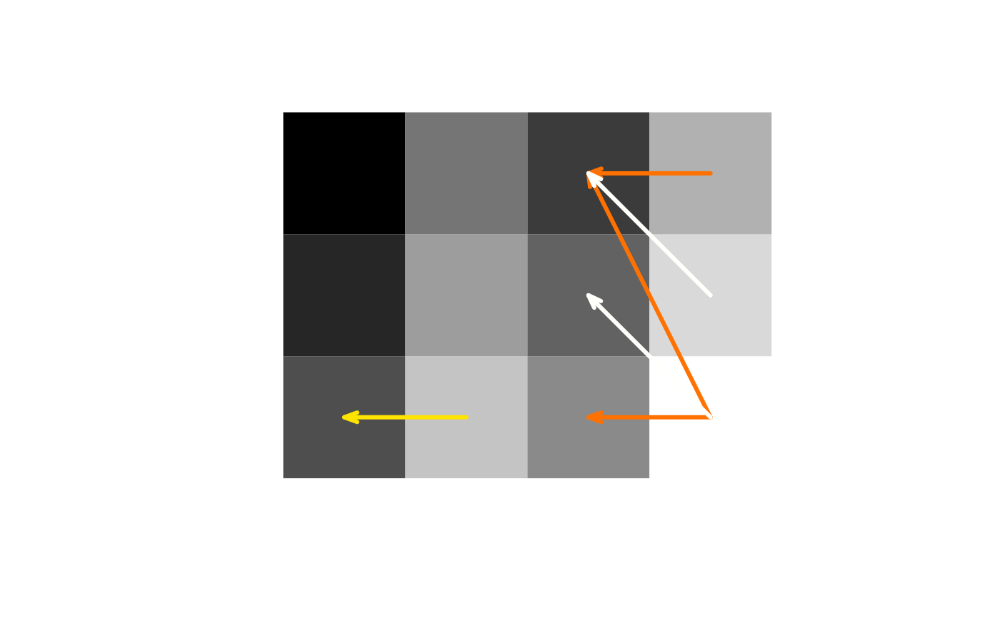
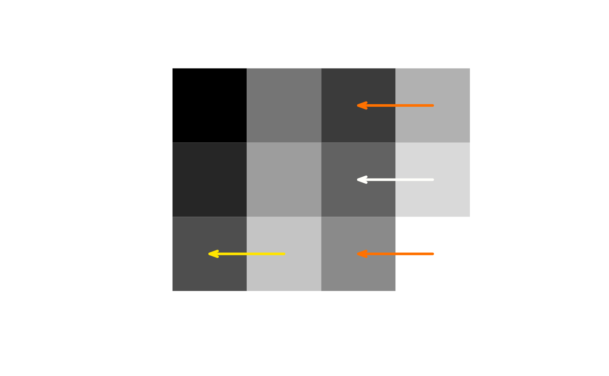
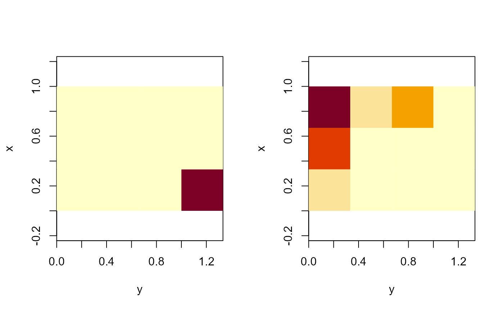

Unbalanced Optimal Transport between pgrid Objects
unbalanced.RdCompute optimal transport between unnormalized images / mass distributions (pgrid objects)
under the option that mass can be dispose of. Transport cost per unit is distance of transport to
the p-th power. Disposal cost per unit is C^p.
Arguments
- a, b
objects of class
pgridthat are compatible.- p
a power \(\geq 1\) applied to the transport and disposal costs. The order of the resulting unbalanced Wasserstein metric.
- C
The base disposal cost (without the power
p)- method
one of
"networkflow"and"revsimplex", specifing the algorithm used. See details.- output
character. One of "dist", "all" and "rawres". Determines what the function returns: only the unbalanced Wasserstein distance; all available information about the transport plan and the extra mass; or the raw result obtained by the networkflow algorithm. The latter is the same format as in the
transportfunction with optionfullreturn=TRUE. The choiceoutput = "rawres"is mainly intended for internal use.- threads
an integer specifying the number of threads for parallel computing in connection with the networkflow method.
Value
If output = "dist" a single numeric, the unbalanced \((p,C)\)-Wasserstein distance.
Otherwise a list. If output = "all" the list saves a, b, p, C as attributes and
has the following components:
- dist
same as for
output = "dist".- plan
an optimal transport plan. This is a data frame with columns
from,toandmassthat specifies from which element ofato which element ofbwhat amount of mass is sent.fromandtoare specified as vector indices in terms of the usual column major enumeration of the matrices a$mass and b$mass. The plan can be plotted viaplot.pgrid(a, b, plan).- atrans, btrans
matrices specifying the masses transported from each point and to each point, respectively. Corresponds to \((\pi^{(1)}_x)_{x \in G}\) and \((\pi^{(2)}_y)_{y \in G}\) above.
- aextra, bextra
matrices specifying the amount of mass at each point of
aandb, respectively, that cannot be transported and needs to be disposed of. Corresponds to \((a_x - \pi^{(1)}_x)_{x \in G}\) and \((b_y - \pi^{(2)}_y)_{y \in G}\).- inplace
a matrix specifying the amount of mass at each point that can stay in place. Corresponds to \((\pi_{x,x})_{x \in G}\).
Note that atrans + aextra + inplace must be equal to a$mass and likewise for b.
A warning occurs if this is not the case (which may indeed happen from time to time for method
revsimplex, but the error reported should be very small).
Details
Given two non-negative mass distributions ("images") \(a=(a_x)_{x \in G}\), \(b=(a_y)_{y \in G}\) on a grid \(G\), this function minimizes the functional $$\sum_{x,y \in G} \pi_{x,y} d(x,y)^p + C^p \bigl( \sum_{x \in G} (a_x - \pi^{(1)}_x) + \sum_{y \in G} (b_y - \pi^{(2)}_y) \bigr)$$ over all \((\pi_{x,y})_{x,y \in G}\) satisfying $$0 \leq \pi^{(1)}_x := \sum_{y \in G} \pi_{x,y} \leq a_x \ \textrm{and} \ 0 \leq \pi^{(2)}_y := \sum_{x \in G} \pi_{x,y} \leq b_y.$$
Thus \(\pi_{x,y}\) denotes the amount of mass transported from \(x\) to \(y\), whereas \(\pi^{(1)}_x\) and \(\pi^{(2)}_y\) are the total mass transported away from \(x\) and total mass transported to \(y\), respectively. Accordingly \(\sum_{x \in G} (a_x - \pi^{(1)}_x)\) and \(\sum_{y \in G} (b_y - \pi^{(2)}_y)\) are the total amounts of mass of \(a\) and \(b\), respectively, that need to be disposed of.
The minimal value of the functional above taken to the \(1/p\) is what we refer to as unbalanced \((p,C)\)-Wasserstein metric. This metric is used, in various variants, in an number of research papers. See Heinemann et al. (2022) and the references therein and Müller et al. (2022), Remark 3. We follow the convention of the latter paper regarding the parametrization and the use of the term unbalanced Wasserstein metric.
The practical difference between the two methods "networkflow" and "revsimplex" can
roughly described as follows. The former is typically faster for large examples (64x64
and beyond), especially if several threads are used. The latter is typically faster
for smaller examples (which may be relevant if pairwise transports between many objects
are computed) and it guarantees a sparse(r) solution, i.e. at most m+n+1 individual
transports, where m and n are the number of non-zero masses in a and b, respectively).
Note however that due to the implementation the revsimplex algorithm is a little less
precise (roughly within 1e-7 tolerance). For more details on the algorithms see transport.
References
Florian Heinemann, Marcel Klatt and Axel Munk (2022).
Kantorovich-Rubinstein distance and barycenter for finitely supported measures: Foundations and Algorithms.
Arxiv preprint.
doi: 10.48550/arXiv.2112.03581
Raoul Müller, Dominic Schuhmacher and Jorge Mateu (2020).
Metrics and barycenters for point pattern data
Statistics and Computing 30, 953-972.
doi: 10.1007/s11222-020-09932-y
See also
kr_dist in the package WSGeometry, which performs a similar task with more flexible input
(may be image files or wpp-objects). The present function gives more informative output and is currently better
optimized for images if p=1 or if the image has many zeros.
plot.ubtrans, which can plot the various components of the list obtained for output="all".
Examples
a <- pgrid(matrix(1:12, 3, 4))
b <- pgrid(matrix(c(9:4, 12:7), 3, 4))
res1 <- unbalanced(a, b, 1, 0.5, output="all")
res2 <- unbalanced(a, b, 1, 0.3, output="all")
plot(a, b, res1$plan, angle=20, rot=TRUE)

plot(a, b, res2$plan, angle=20, rot=TRUE)

par(mfrow=c(1,2))
matimage(res2$aextra, x = a$generator[[1]], y = a$generator[[2]])
matimage(res2$bextra, x = b$generator[[1]], y = b$generator[[2]])
